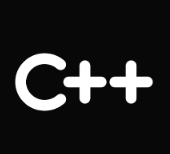

Gustavo Henrique | Desenvolvedor
Atuo no desenvolvimento back-end construindo APIs, aplicações escaláveis e projetos estruturados com boas práticas de engenharia de software com Java e Spring. Trabalho com arquitetura limpa, princípios SOLID, padrões de projeto, versionamento de código, documentação técnica e testes automatizados. Tenho experiência em bancos de dados relacionais, estruturas de dados e algoritmos, aplicando soluções eficientes e de qualidade.
Ao lado lhe apresento alguns projetos pessoais que resolvem problemas do meu dia a dia, as soluções foram elaboradas e documentadas visando seguir boas práticas e recursos do mercado de desenvolvimente de software.
Tecnologias
